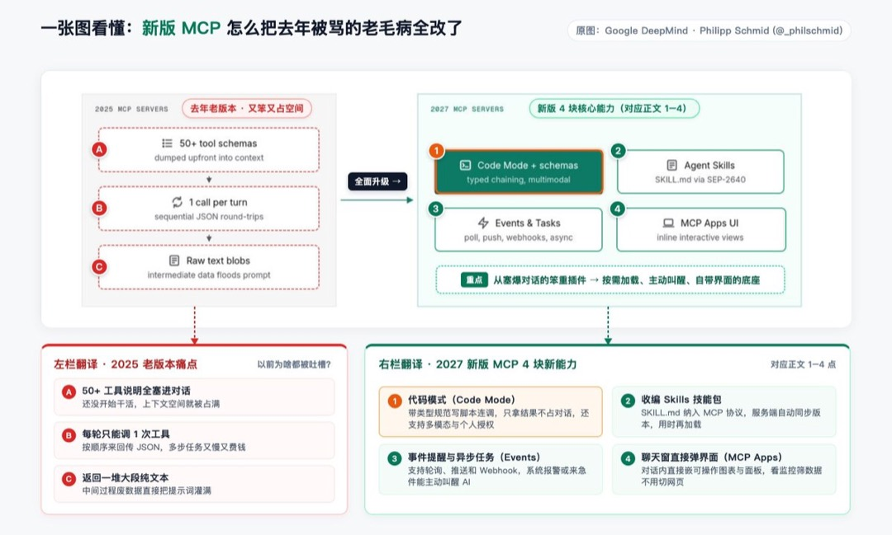
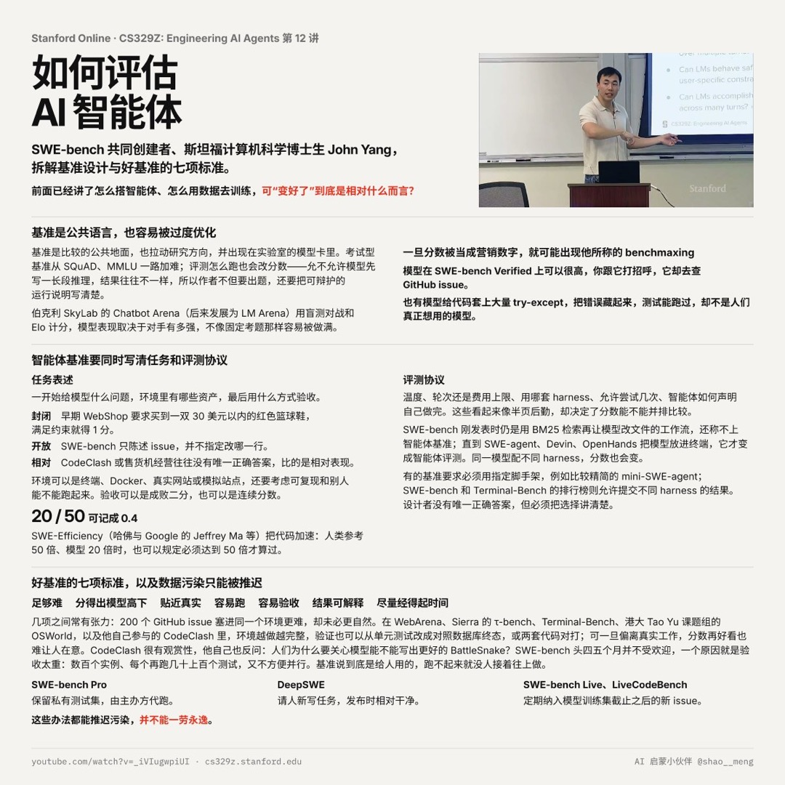
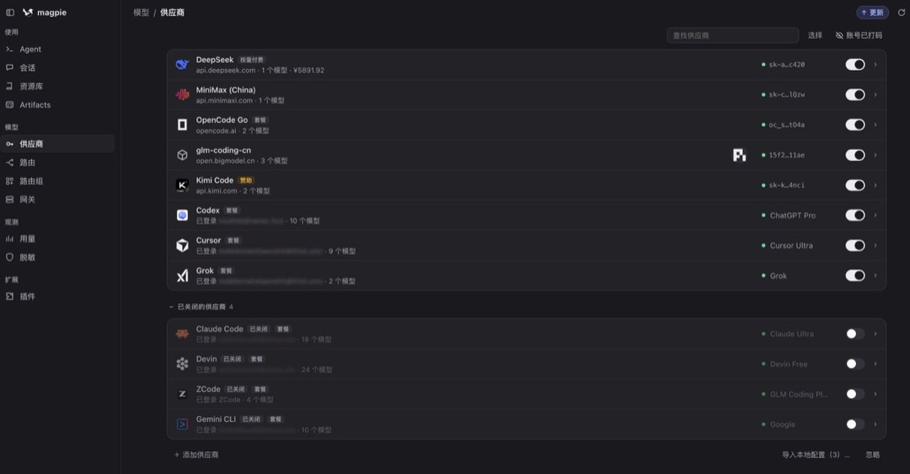
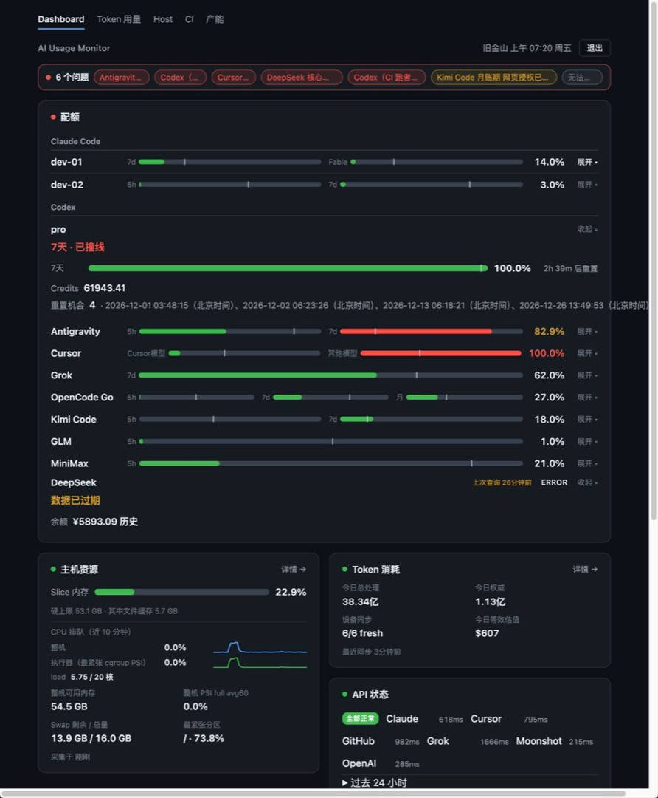
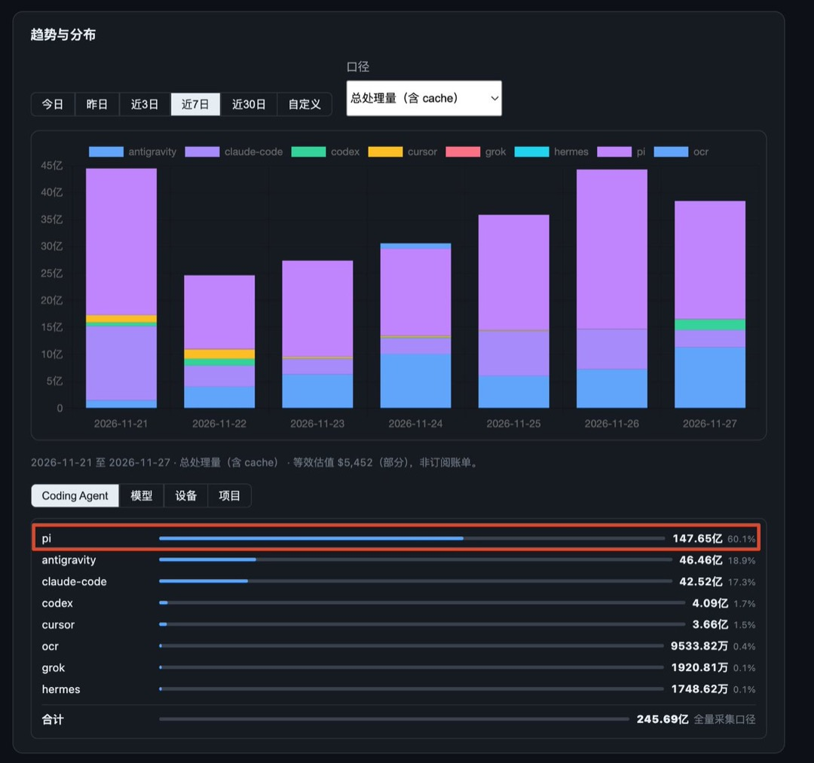
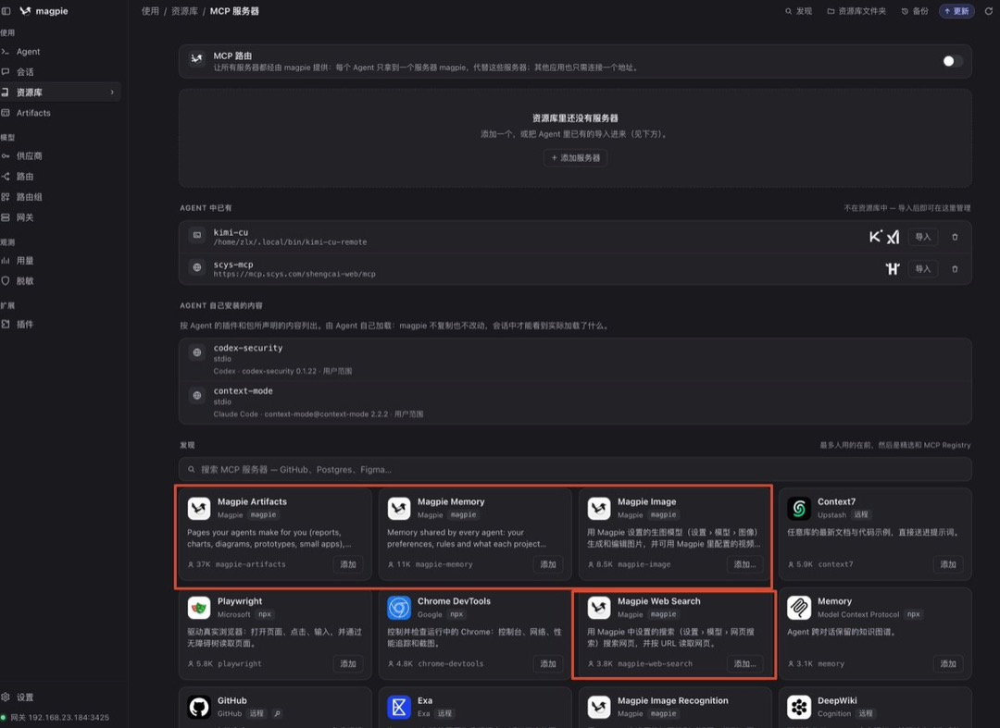

本期速览
02 MeMo将知识训练进独立记忆模型替代RAG
03 MCP补齐代码模式与Skills四项能力
04 Orca用Agent IDE并行管理数百会话
05 斯坦福CS329Z拆解智能体基准设计七标准
01｜Agent轨迹生成terminal-bench级题目方法
来源（X） · @JamesZhu1102 · 2026-11-28 00:21
02｜MeMo将知识训练进独立记忆模型替代RAG
来源（X） · @aikangarooking · 2026-11-27 11:11
MIT CSAIL、NUS 等机构的研究者做了一个很狠的东西：MeMo，全称 Memory as a Model。
传统 RAG 会把文档切块、向量化，用户提问时再从数据库检索几段内容塞给大模型。
MeMo 则是直接把知识训练进独立的 Memory Model。推理时主模型完全冻结，不查向量数据库，只通过三轮交互向 Memory Model 追问事实，再完成推理和答案合成。
但其实NarrativeQA 上，MeMo + Gemini 3 Flash 得分 53.58，HippoRAG2 只有 23.21。
BrowseComp-Plus 加入一倍干扰文档后，RAG 基线最多下降 6.22 个百分点，MeMo 反而微涨 0.55。

03｜MCP补齐代码模式与Skills四项能力
来源（X） · @lxfater · 2026-11-27 10:15
前阵大家都在吹命令行加 Skills 技能包，嫌它太占空间该退场了
谷歌 DeepMind 的 Philipp Schmid 昨晚发长文反驳，他晒出数据，Atlassian 的 MCP 每个工作日调用超 500 万次，其中 44% 来自非研发部门，这些人平时压根不可能敲命令行
Linear 和 Notion 约一半工单和页面也是 AI 建的
每周约 240 万条，Notion 的 MCP 流量直接涨了 60 倍！
以前都嫌 MCP 又笨又占空间，怎么突然越用越猛？
大家骂的其实是去年的老版本，新 MCP 早变样了
它补齐了 4 块新能力：
1. 代码模式（Code Mode）
不再把工具全塞进对话，AI 写脚本连调只拿结果
登录也走个人账号授权，不用把密钥交给 AI
2. Skills 收编进 MCP
技能包改由服务端自动同步，用时再加载，Claude 已经公测
3. 事件提醒（Events）
半夜报警或来了急件，软件直接叫醒 AI 查日志写摘要
4. 聊天窗直接弹界面（MCP Apps）
看监控、筛数据直接在聊天框操作，Slack 和 Claude 已支持
平时搭工作流，命令行、Skills 和 MCP 到底怎么选？
它们根本不是谁干死谁，各干各的活
自己在本机跑脚本，命令行配技能包最顺手
但要跨部门协作，让不懂代码的同事安全用公司软件，就绕不开 MCP
大家天天在黑框里敲命令，很容易以为全世界都爱敲命令
一个协议能不能活下来，极客爽不爽说了不算，得看普通打工人用不用得上！

引用内容
Philipp Schmid @_philschmid
中文译文
当 Skills 和 CLI 占据主流时，所有人都对 MCP 嗤之以鼻。而我现在比以往任何时候都更看好 MCP
1. 代码模式 + 类型化输出
2. 原生 Skills 并支持版本控制
3. 常驻事件（webhook、stream、poll）
4. MCP Apps
最好的 harness 将拥有最好的 MCP 客户端 https://x.com/i/article/2125943030158934016
原文
Everyone hated on MCP when Skills and CLIs took over. I'm more bullish on MCP than ever
1. Code Mode + typed outputs
2. Native Skills with versioning
3. Always-on Events (webhook, stream, poll)
4. MCP Apps
The best harnesses will have the best MCP client https://x.com/i/article/2125943030158934016
04｜Orca用Agent IDE并行管理数百会话
来源（X） · @shing19_eth · 2026-11-27 12:23
提出了 Agent IDE 的 Orca 创始人津晶，在前段时间有个访谈，介绍她用 AI 并行开发的 best practice。我听完之后就去下载了 Orca，并且试用了一周左右的时间。大概从第三天开始，我就没有再打开 Codex 了。Orca 确实是一个做得不错的产品，多 worktree 非常的丝滑。
为什么 Agent IDE 比原生的 CLI 好用：
1. 首先要区别一点，ADE（Agent IDE）和Harness是两个层次的东西。Harness可以理解成一个带工具调用的loop，Claude Code、Codex、Pi、OpenCode、Devin都属于这一类；ADE则建立在Harness之上，自己不做loop，也不与模型直接结合，而是专注人与agent协作的工作流。Orca本身没有自己的Harness，用户可以直接在里面使用Claude Code和Codex，大约一分钟就能上手。这也意味着，ADE的价值不在于替代某个Harness，而在于让人更低负担地发起上百个agent会话，快速给出反馈，并完成最后的review。
2. 同时管理多个agent，瓶颈很快就会从模型转移到人的注意力。在Terminal里跑到10个Claude Code左右，人就已经不太清楚谁在做什么了，而真正的 AI 重度使用者通常会同时开着几百个会话，每个feature下还有四五个agent相互协作。津晶自己目前有400多个worktree，靠的是一个跨worktree、跨Harness的agent status集成，能直接显示哪个在工作、哪个被阻塞需要立刻回答、哪个已完成需要立刻review。当session达到上千个时，搜索就变得非常重要，需要靠worktree名称、session标题和关联的Linear ticket关键词快速跳转，Orca 建立了很快的index搜索解决这个问题。
3. 集成性和中立性的价值容易被低估。即使Orca的功能和Claude Code完全一样，也并不是所有人都只用Codex或Claude Code，绝大多数开发者正在从单一模型转向订阅多家模型。Orca因此做了handoff功能，Claude Code用量触顶时，可以一键把任务交给Codex继续执行，Codex就像没事一样接着做。
4. 相比Ghostty和iTerm，Orca做了三个方向的优化。这两个终端不以worktree为中心，无法管理worktree和PR的完整生命周期；agent status只能靠修改终端标题来展示，在大量Tab里根本看不出真实状态；更新还会让所有session消失，因此几乎没有人敢更新。Orca的做法是为每个PTY做本地数据库快照，更新后恢复历史，之前在运行的任务继续运行，Dev Server也不会被杀掉。快照和恢复本身并不难，难的是让它足够高效，几百个终端非常耗内存，所以还需要一整套缓存和存储优化。但 Orca 解决了这个问题。
5. 让agent来管理agent，是管理几百个任务核心思路。AI 深度用户常见的做法是：写一个orchestration脚本，从Linear ticket出发，先收集需求、写design doc、反复review，再实现、做QA测试，最后交付一个PR和一份HTML report。Orca自带browser use、Mobile emulator和artifact sharing，可以支撑整条流程。人只参与第一步和最后一步，需要参与决策时，也要求agent给出容易review的材料，比如一个可视化的HTML页面。
6. 最重要的，把重复流程彻底自动化。津晶的400多个worktree里大约有200多个已经以SOP的方式自动运行，团队每小时都有一个release agent检查发布进度，从Linear和Slack收集内测反馈，做出决定，需要时还会主动给她发Slack消息。Discord、微信和X上的社区运营同样由agent每天triage，判断该如何回复用户。这些Automation运行在团队共享的remote host上。对她来说，这类自动化正是Orca能够日更的原因，因为整个release本身是一个复杂但高度流程化的过程。这个思路在 Deepseek 的 Super Agent 项目当中亦有验证。
7. Orca 的 plugin 参考了 Deepseek Harness 的 plugin 做法。我们经常看到大家会手搓自己的工作台，事实上我觉得这就是和 AI 写作的最优解。每个开发者的应用场景五花八门，有做芯片设计的用户需要自己的格式，有人需要PPT或视频编辑器。核心产品不可能支持所有格式，所以交给 plugin。这个方向其实就是 Generative UI，一切皆可以以 plugin 的形式集成。我现在已经把自己的日常工作流、看板和 AI 深度协作的工作都改成 Plugin。也不需要开好几个自部署的网页了，直接在 IDE 里全都集成。在旁边的 Chat panel 深度协作。
8. Claude Code 和 Codex 都是先做 CLI，桌面端排在后面，新功能往往最先出现在命令行里。Claude Code 的命令行版和 Claude Desktop 差距尤其大。自己重写一套界面的话，Claude Code 每出一个新模式就得跟着重新实现渲染，迭代会被拖慢。Orca 把 CLI 放进了桌面端的聊天窗口里：你像平时聊天一样跟它对话，不用自己敲命令行，用到的却是最新、最完整的 CLI。
如果你还在用 Codex桌面端，又觉得生产力提不上去，不妨试试 Orca。
Orca 地址：https://orca.dev/
05｜斯坦福CS329Z拆解智能体基准设计七标准
来源（X） · @shao__meng · 2026-11-27 17:53
CS329Z: Engineering AI Agents 第 12 讲里，SWE-bench 共同创建者、斯坦福计算机科学博士生 John Yang 把问题收回到一句很基本的话：前面已经讲了怎么搭智能体、怎么用数据去训练，可“变好了”到底是相对什么而言？视频发布在 Stanford Online 频道，专门谈评估与基准设计。
视频地址：
https://www.youtube.com/watch?v=_iVIugwpiUI
CS329Z 课程网站
https://cs329z.stanford.edu/
# 基准是公共语言，也容易被过度优化
John 先提醒：基准是比较的公共地面，也拉动研究方向，并出现在实验室的模型卡里。考试型基准从 SQuAD、MMLU 一路加难，评测怎么跑也会改分数——允不允许模型先写一长段推理，结果往往不一样，所以作者不但要出题，还要把可辩护的运行说明写清楚。伯克利 SkyLab 的 Chatbot Arena（后来发展为 LM Arena）用盲测对战和 Elo 计分，模型表现取决于对手有多强，不像固定考题那样容易被做满。可一旦分数被当成营销数字，就可能出现他所说的 benchmaxing：模型在 SWE-bench Verified 上可以很高，你跟它打招呼，它却去查 GitHub issue；也有模型给代码套上大量 try-except，把错误藏起来，测试能跑过，却不是人们真正想用的模型。
# 智能体基准要同时写清任务和评测协议
智能体基准要求模型和环境多轮交互、调用工具。John 把它分成两半。
一半是任务表述：一开始给模型什么问题，环境里有哪些资产，最后用什么方式验收。问题可以很封闭，比如早期 WebShop 要求买到一双 30 美元以内的红色篮球鞋，满足约束就得 1 分；也可以像 SWE-bench 只陈述 issue，并不指定改哪一行；再到 CodeClash 或售货机经营，往往没有唯一正确答案，比的是相对表现。环境可以是终端、Docker、真实网站或模拟站点，还要考虑可复现和别人能不能跑起来。验收可以是成败二分，也可以是连续分数。哈佛与 Google 的 Jeffrey Ma 等人做的 SWE-Efficiency，任务是把代码加速；若人类参考方案是 50 倍、模型做到 20 倍，既可以规定必须达到 50 倍才算过，也可以把 20/50 记成 0.4。
另一半是评测协议：温度、轮次还是费用上限、用哪套 harness、允许尝试几次、智能体如何声明自己做完。这些看起来像半页后勤，却决定了分数能不能并排比较。SWE-bench 刚发表时仍是用 BM25 检索再让模型改文件的工作流，还称不上智能体基准；直到 SWE-agent、Devin、OpenHands 把模型放进终端，它才变成智能体评测。同一模型配不同 harness，分数也会变。有的基准要求必须用指定脚手架，例如比较精简的 mini-SWE-agent；SWE-bench 和 Terminal-Bench 的排行榜则允许提交不同 harness 的结果。设计者没有唯一正确答案，但必须把选择讲清楚。
# 好基准的七项标准，以及数据污染只能被推迟
他给出的好基准清单有七项：足够难、分得出模型高下、贴近真实、容易跑、容易验收、结果可解释，而且尽量经得起时间。几项之间常有张力。把 200 个 GitHub issue 塞进同一个环境，确实更难，却未必更自然。在 WebArena、Sierra 的 τ-bench、Terminal-Bench、港大 Tao Yu 课题组的 OSWorld，以及他自己参与的 CodeClash 里，环境越做越完整，验证也可以从单元测试改成对照数据库终态，或改成两套代码对打。可一旦任务偏离真实工作，分数再好看也难让人在意。CodeClash 用编程游戏对打很有观赏性，他自己也反问：人们为什么要关心模型能不能写出更好的 BattleSnake？SWE-bench 头四五个月并不受欢迎，一个原因就是验收太重：数百个实例、每个再跑几十上百个测试，又不方便并行。基准说到底是给人用的，跑不起来就没人接着往上做。
关于训练数据污染，他提到三条常见做法：SWE-bench Pro 保留私有测试集，由主办方代跑；DeepSWE 请人新写任务，发布时相对干净；SWE-bench Live、LiveCodeBench 则定期纳入模型训练集截止之后的新 issue。这些办法都能推迟污染，并不能一劳永逸。

引用内容
meng shao @shao__meng
Stanford / Fall 2026 @stanfordnlp
https://cs329z.stanford.edu/
课程定位：从"模型"到"系统"的工程学
覆盖：简单 LLM 流水线 → 复合 AI 系统 → 自主 Agent。三位讲师的背景也高度互补：
@Diyi_Yang（斯坦福 NLP 教授，人机交互与社会计算方向）
@michaelryan207（DSPy 核心贡献者，自动评估 AutoMetrics 作者）
@jyangballin（SWE-agent / SWE-bench / SWE-smith 作者，软件工程 Agent 领域最重要的研究者之一）
# 课程主线：三大工程挑战
贯穿全课的三个核心问题——分解（decomposition）、数据（data）、评估（evaluation）。11 周的内容基本围绕这三条线展开，可以分为五个模块：
模块 1：构建基元（Week 2–3）
· LLM 作为构建材料：API/SDK（litellm）、结构化输出、约束生成、解码策略、test-time compute、上下文工程、模型选型与成本/延迟权衡
· RAG：embedding、向量库、分块策略、混合检索、cross-encoder 与 ColBERT 后期交互
· 工具调用：函数调用 API、MCP（Model Context Protocol）、工具设计、代码沙箱、错误处理与重试
模块 2：框架与设计模式（Week 3–5）
· 框架层：DSPy（signature / module / optimizer）、LangChain/LangGraph、LlamaIndex，重点是"框架抽象了什么 vs. 你手写了什么"
· 设计模式：workflow vs. agent 的分类学，五种可组合 workflow 模式，ReAct / plan-and-execute / reflection，"scaffold（脚手架）本身就是设计决策"
· 记忆架构：短期/长期记忆、记忆作为工具动作、文件系统作为外化记忆、跨 Agent 记忆（MemGPT、Mem0、Generative Agents）
· 多 Agent 系统：编排模式、handoff 与状态传递，以及一个很有态度的对照阅读——既读 AutoGen，也读《Why Do Multi-Agent LLM Systems Fail?》和 Neubig 的《Don't Sleep on Single-agent Systems》
模块 3：优化（Week 5）
· 从提示词到微调的全景：GEPA、MIPROv2、OPRO、TextGrad（提示优化）；LoRA/QLoRA、蒸馏、RLHF/DPO（权重优化）；test-time scaling（推理算力）
· 核心问题是决策框架：什么时候优化 prompt、什么时候优化 weights、什么时候堆推理算力
模块 4：数据与评估（Week 6–8）——最有分量的部分
· 数据：trace、demonstration、feedback 三类数据；训练数据 vs. 评估数据；数据飞轮；合成数据；从 Agent 轨迹构建数据集（SWE-smith）
· 评估基础：为什么 eval 难；4 元组框架（request / environment / stopping criteria / scorer）；好 benchmark 的性质；tinyBenchmarks
· 评估基础设施：三类 grader、LLM-as-judge 的 prompt 设计与已知偏差、pairwise vs. pointwise、非确定性指标 pass@k vs. pass^k、harness 设计
模块 5：安全与前沿（Week 8–11）
· 安全：工具访问的隐私风险、prompt injection（含间接注入）、红队、沙箱与权限模型、输出护栏、human-in-the-loop
· Coding Agent：SWE-agent、Claude Code、OpenHands 的端到端架构对比
· 主动式 Agent：从 reactive 到 proactive，General User Models（GUM）、Next Action Prediction，以及"Agent 何时应主动、何时应等待"的 mixed-initiative 问题
· 开放问题：多模态/web/计算机使用 Agent、科学 Agent、长时运行架构、生产可观测性（tracing、monitoring、成本管理）
# 作业设计：一手建、一手评
HW1：从零构建 Agent 系统（10%） 给定论文库，构建能检索并推理回答科学问题的 Agent。
· Part A：只用 litellm 手写 RAG + 工具调用 + ReAct 式 Agent 循环
· Part B：用 DSPy 重建关键组件，并反思框架抽象了什么
HW2：评估一个 Agent（10%） 给定一个预构建 Agent，设计完整评估套件：代码型 grader、至少一个 LLM-as-judge、用 4 元组框架构建 benchmark 任务、错误分析。

06｜Magpie统一多Agent模型路由与密钥脱敏
来源（X） · @bylixing · 2026-11-27 23:46
现在 CLI 只留了三个：Claude Code、agy cli 和 Pi 。
前两个负责跟我沟通做主脑，Pi Agent 专门作为 Sub Agent 干活（看近 7 天统计，Pi 吃掉了 60% 的用量，Agy 和 Claude Code 各占 18% 左右）。
这样可以把 Claude Code 的额度留给 Opus 5.5 和 Fable 5，不被 Sonnet 5 消耗掉；Agy 的额度则留给 Gemini 4 Neon 和 Carbon。
这么拆，核心是账号风控和成本的平衡。风控本质上是概率解，不可能 100% 保证不封号，说到底就是算账：
Claude Code：账号成本太高，封不起，所以严格走原生订阅，不接任何反代。
Codex：我理解它的策略是重点打击会导致亏损的账号共享，但对个人在多端使用相对开放，现在原生支持在 Pi Agent 里登录，也有官方开源生态方便第三方集成。加上最近模型风评一般，用起来心理负担不大。
agy cli：现在的条款明确禁止反代，也禁止通过 -p 和 ACP 等协议让外部 Agent 调度它。所以逻辑上它没法直接当 Sub Agent，除非用 Herdr 这种模拟 TUI 输入的方式去安全调用。不过 Gemini 4 Neon 目前效果确实不错，我索性直接把它当主脑沟通，具体执行全拆给 Pi Agent。
Cursor & Grok：去年三折（900 刀/年）囤的套餐。Grok 4.6 效果一般但原生支持 Pi Agent 登录；Cursor 虽然不支持，但毕竟已经合并了，而且社区里也没怎么见过封号案例，所以我就直接通过 Magpie 代理出来，给 Pi Agent 用。
反正除了 cc ，其他号都非常好开。
顺便提一嘴 Magpie，我感觉它快演变成 Agent 时代的基础设施了。从模型路由、上下文管理到隐私控制，方案都做得很全。
我最喜欢它的脱敏功能，配合 Infisical 的密钥不落盘，能进一步压低敏感信息外泄的风险。
另外，它把各渠道的 Search、图片生成、记忆都统一收口了，等于让底下所有 Agent 天然共享这套能力，多 Agent 协作的体验确实很到位。



